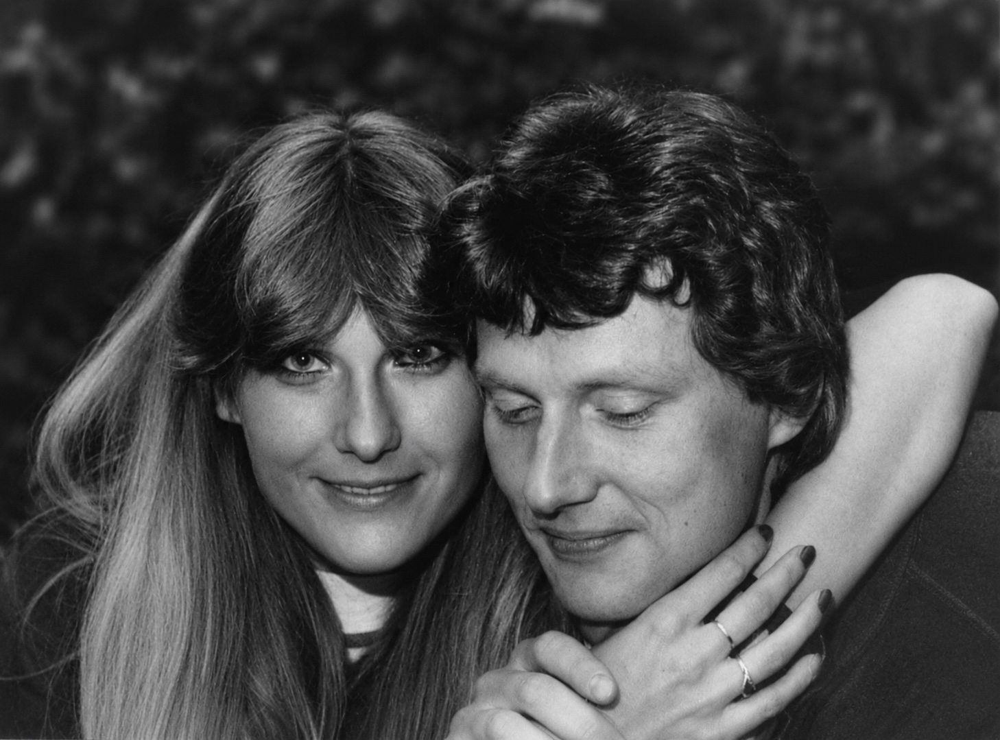

Sommer 1977
Es war im Sommer 1974, als ich Hilde zum ersten Mal sah. Eine Eifeler Schönheit. Schlank, mit einem hübschen Gesicht und langem, brünettem Haar.
Ihr Bruder Rudi machteein Praktikum bei der Morbacher Sparkasse und erzählte seinen beiden Schwestern Uschi und Hilde, dass im Juli die Morbacher Kirmes stattfinde. Das lohne sich, und sie sollten ihn doch besuchen. Das taten sie. Beide stiegen im Hotel Wolter am Oberen Markt ab.
Ich hatte gerade mein Medizinstudium begonnen und war im zweiten Semester. Im Juli 1974 war Deutschland Fußball-Weltmeister geworden. Und das hatten wir in Morbach bei Atze am Unteren Markt kräftig gefeiert. Wir: das waren Heiner, Elmar, Rocker und Meik aus Schauren. Und anschließend machten wir gemeinsam Urlaub in der Provence. Zur Morbacher Kirmes gegen Ende Juli waren wir wieder zurück. Jeder von uns hatte sich einen typischen provencialischen Lederhut zugelegt. Und damit gingen wir auf die Kirmes. Ich fand, dass ich mit dem Hut und meinen langen Haaren ziemlich verwegen aussah und rechnete mir gute Chancen bei den Mädels aus.
Hilde und Uschi standen am Fenster des Hotels Wolter und beobachteten uns. Sie fanden, dass wir einfach nur doof aussahen und waren – anders als wir dachten – überhaupt nicht von uns angetan.
Drei Jahre später traf ich Hilde erneut auf der Morbacher Kirmes. Rudi besuchte seinen Freund Elmar und hatte beide Schwestern mitgebracht. Hilde stand mit Elmar am Weinstand, als sie mich aus der Ferne kommen sah. Sie fragte Elmar:
„Sag mal, ist das Lothar?“
Sie konnte kaum glauben, dass sich dieser etwas pummelige, langhaarige, Lederhut tragende Frosch in einen schlanken, kurzhaarigen Prinzen verwandelt hatte. Die anstrengende, nächtelange Lernphase für das Physikum hatten an mir gezehrt und die Pfunde purzeln lassen. Und die langen Haare waren einfach lästig geworden.
„Ja, stimmt“, sagte Elmar, „der hat sich ganz schön verändert.“
Hilde war von mir angetan. Zu fortgeschrittener Stunde und nach einigen Gläsern Wein gaben wir uns den ersten Kuss.
Kurz darauf fuhr ich mit Gerd und Luigi nach Spanien in Urlaub. Aus Spanien schrieb ich Hilde eine Postkarte. Darin schlug ich vor, dass wir uns im September auf dem Bernkasteler Weinfest treffen sollten. Samstags um 20 Uhr am Brauneberger Weinstand.
Hilde hatte eigentlich keine große Lust auf das Weinfest, ließ sich aber von Rudi überreden. Auf der Weinstraße traf sie meinen Bruder Arthur, der ihr erzählte, dass ich ebenfalls dort sei. Hilde hoffte, dass sie mich sehen würde. Und tatsächlich trafen wir uns irgendwo zwischen den vielen Besuchern.

Ende der 1970er Jahre: wir gehörten zuammen
Unsere Freundschaft wurde enger, obwohl wir an verschiedenen Orten lebten. Hilde zunächst in Köln, später in Bonn, ich weiterhin in Gießen. Wir trafen uns alle paar Wochen, mal in Köln, häufiger jedoch in Gießen, wo sich inzwischen ein großer Freundeskreis gebildet hatte. Dort war immer etwas los, und irgendjemand veranstaltete immer eine Party. Und wir mischten fleißig mit. Mit der Zeit wurde mir immer bewußter, welche eine wunderbare Frau Hilde war. Hübsch, selbstbewusst, gescheit, tolerant und trotzdem bodenständig und bescheiden. Und noch etwas Entscheidendes: sie versuchte nicht, mich einzuengen, ganz für sich selbst zu haben. Sie ließ mir meine Freunde mit unseren Eskapaden und schrieb mir nicht vor, wie ich zu sein habe oder wie ich mich ihr zuliebe verändern müsse. Ich konnte einfach weiter ich selbst sein. Musste meine neu eroberte Freiheit nicht wieder aufgeben. Wer hätte solch eine Frau nicht gerne länger, vielleicht für den Rest des Lebens an seiner Seite gehabt?
Anfang 1984 orientierte ich mich in Richtung USA. Es war der Zeitpunkt gekommen, wo wir entscheiden mussten, ob wir dies gemeinsam tun. Im August 1984 war es soweit: nach sieben Jahren Freundschaft wollten wir für immer zusammen bleiben. Ich nahm Hilde zu meiner Frau.
Es war die beste unter vielen guten Entscheidungen meines Lebens.